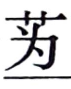
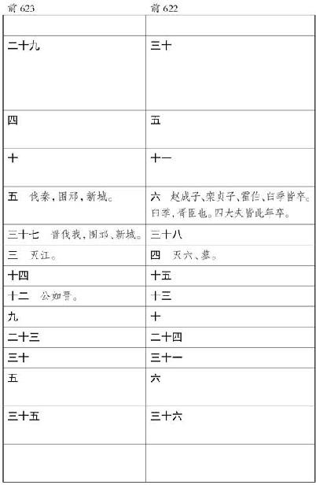
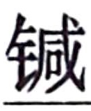
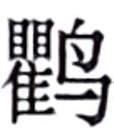

史记卷三十三
鲁周公世家第三
周公旦 者，周武王 弟也。自文王 在时，旦 为子孝，笃仁，异于群子。及武王 即位，旦 常辅翼武王 ，用事居多。武王 九年，东伐至盟津 ，周公 辅行。十一年，伐纣 ，至牧野 ，周公 佐武王 ，作牧誓 。破殷 ，入商 宫。已杀纣 ，周公 把大钺，召公 把小钺，以夹武王 ，衅社，告纣 之罪于天，及殷 民。释箕子 之囚。封纣 子武庚禄父 ，使管叔 、蔡叔 傅之，以续殷 祀。遍封功臣同姓戚者。封周公旦 于少昊 之虚曲阜 ，是为鲁公 。周公 不就封，留佐武王 。
武王 克殷 二年，天下未集，武王 有疾，不豫，群臣惧，太公 、召公 乃缪卜。周公 曰：“未可以戚我先王。”周公 于是乃自以为质，设三坛，周公 北面立，戴璧秉圭，告于太王 、王季 、文王 。史策祝曰：“惟尔元孙王发 ，勤劳阻疾。若尔三王是有负子之责于天，以旦 代王发 之身。旦 巧能，多材多艺，能事鬼神。乃王发 不如旦 多材多艺，不能事鬼神。乃命于帝庭，敷佑四方，用能定汝子孙于下地，四方之民罔不敬畏。无坠天之降葆命，我先王亦永有所依归。今我其即命于元龟，尔之许我，我以其璧与圭归，以俟尔命。尔不许我，我乃屏璧与圭。”周公 已令史策告太王 、王季 、文王 ，欲代武王发 ，于是乃即三王而卜。卜人皆曰吉，发书视之，信吉。周公 喜，开籥，乃见书遇吉。周公 入贺武王 曰：“王其无害。旦 新受命三王，维长终是图。兹道能念予一人。”周公 藏其策金縢匮中，诫守者勿敢言。明日，武王 有瘳。
其后武王 既崩，成王 少，在强葆之中。周公 恐天下闻武王 崩而畔，周公 乃践阼代成王 摄行政当国。管叔 及其群弟流言于国曰：“周公 将不利于成王 。”周公 乃告太公望 、召公奭 曰：“我之所以弗辟而摄行政者，恐天下畔周 ，无以告我先王太王 、王季 、文王 。三王之忧劳天下久矣，于今而后成。武王 蚤终，成王 少，将以成周 ，我所以为之若此。”于是卒相成王 ，而使其子伯禽 代就封于鲁 。周公 戒伯禽 曰：“我文王 之子，武王 之弟，成王 之叔父，我于天下亦不贱矣。然我一沐三捉发，一饭三吐哺，起以待士，犹恐失天 下之贤人。子之鲁 ，慎无以国骄人。”
管 、蔡 、武庚 等果率淮夷 而反。周公 乃奉成王 命，兴师东伐，作大诰 。遂诛管叔 ，杀武庚 ，放蔡叔 。收殷 馀民，以封康叔 于卫 ，封微子 于宋 ，以奉殷 祀。宁淮夷 东土，二年而毕定。诸侯咸服宗周 。
天降祉福，唐叔 得禾，异母同颖，献之成王 ，成王 命唐叔 以馈周公 于东土，作馈禾 。周公 既受命禾，嘉天子命，作嘉禾 。东土以集，周公 归报成王 ，乃为诗贻王，命之曰鸱鸮 。王亦未敢训周公 。
成王 七年二月乙未，王朝步自周 ，至丰 ，使太保召公 先之雒 相土。其三月，周公 往营成周雒邑 ，卜居焉，曰吉，遂国之。
成王 长，能听政。于是周公 乃还政于成王 ，成王 临朝。周公 之代成王 治，南面倍依以朝诸侯。及七年后，还政成王 ，北面就臣位，匔匔如畏然。
初，成王 少时，病，周公 乃自揃其蚤沉之河 ，以祝于神曰：“王少未有识，奸神命者乃旦 也。”亦藏其策于府。成王 病有瘳。及成王 用事，人或谮周公 ，周公 奔楚 。成王 发府，见周公 祷书，乃泣，反周公 。
周公
归，恐成王
壮，治有所淫佚，乃作多士
，作毋逸
。毋逸
称：“为人父母，为业至长久，子孙骄奢忘之，以亡其家，为人子可不慎乎！故昔在殷王中宗
，严恭敬畏天命，自度治民，震惧不敢荒宁，故中宗
飨国七十五年。其在高宗
，久劳于外，为与小人，作其即位，乃有亮 ，三年不言，言乃欢，不敢荒宁，密靖殷国
，至于小大无怨，故高宗
飨国五十五年。其在祖甲
，不义惟王，久为小人于外，知小人之依，能保施小民，不侮鳏寡，故祖甲
飨国三十三年。”多士
称曰：“自汤
至于帝乙
，无不率祀明德，帝无不配天者。在今后嗣王纣
，诞淫厥佚，不顾天及民之从也。其民皆可诛。”“文王
日中昃不暇食，飨国五十年。”作此以诫成王
。
，三年不言，言乃欢，不敢荒宁，密靖殷国
，至于小大无怨，故高宗
飨国五十五年。其在祖甲
，不义惟王，久为小人于外，知小人之依，能保施小民，不侮鳏寡，故祖甲
飨国三十三年。”多士
称曰：“自汤
至于帝乙
，无不率祀明德，帝无不配天者。在今后嗣王纣
，诞淫厥佚，不顾天及民之从也。其民皆可诛。”“文王
日中昃不暇食，飨国五十年。”作此以诫成王
。
成王 在丰 ，天下已安，周 之官政未次序，于是周公 作周官 ，官别其宜。作立政 ，以便百姓。百姓说。
周公 在丰 ，病，将没，曰：“必葬我成周 ，以明吾不敢离成王 。”周公 既卒，成王 亦让，葬周公 于毕 ，从文王 ，以明予小子不敢臣周公 也。
周公
卒后，秋未获，暴风雷，禾尽偃，大木尽拔。周国
大恐。成王
与大夫朝服以开金縢书，王乃得周公
所自以为功代武王
之说。二公及王乃问史百执事，史百执事曰：“信有，昔周公
命我勿敢言。”成王
执书以泣，曰：“自今后其无缪卜乎！昔周公
勤劳王家，惟予幼人弗及知。今天动威以彰周公
之德，惟朕小子其迎，我国家礼亦宜之。”王出郊，天乃雨，反风，禾尽起。二公命国人，凡大木所偃，尽起而筑之。岁则大孰。于是成王
乃命鲁
得郊祭文王
。鲁
有天子礼乐者，以褒周公
之德也。
周公 卒，子伯禽 固已前受封，是为鲁公 。鲁公伯禽 之初受封之鲁 ，三年而后报政周公 。周公 曰：“何迟也？”伯禽 曰：“变其俗，革其礼，丧三年然后除之，故迟。”太公 亦封于齐 ，五月而报政周公 。周公 曰：“何疾也？”曰：“吾简其君臣礼，从其俗为也。”及后闻伯禽 报政迟，乃叹曰：“呜呼，鲁 后世其北面事齐 矣！夫政不简不易，民不有近；平易近民，民必归之。”
伯禽
即位之后，有管
、蔡
等反也，淮夷
、徐戎
亦并兴反。于是伯禽
率师伐之于肸
，作肸誓
，曰：“陈尔甲胄，无敢不善。无敢伤牿。马牛其风，臣妾逋逃，勿敢越逐，敬复之。无敢寇攘，逾墙垣。鲁
人三郊三隧，峙尔刍茭、糗粮、桢干，无敢不逮。我甲戌筑而征徐戎
，无敢不及，有大刑。”作此肸誓
，遂平徐戎
，定鲁
。
鲁公伯禽
卒，子考公酋
立。考公
四年卒，立弟熙
，是谓炀公
。炀公
筑茅阙门
。六年卒，子幽公宰
立。幽公
十四年，幽公
弟 杀幽公
而自立，是为魏公
。魏公
五十年卒，子厉公擢
立。厉公
三十七年卒，鲁
人立其弟具
，是为献公
。献公
三十二年卒，子真公
杀幽公
而自立，是为魏公
。魏公
五十年卒，子厉公擢
立。厉公
三十七年卒，鲁
人立其弟具
，是为献公
。献公
三十二年卒，子真公 立。
立。
真公 十四年，周厉王 无道，出奔彘，共和行政。二十九年，周宣王 即位。
三十年，真公 卒，弟敖 立，是为武公 。
武公 九年春，武公 与长子括 ，少子戏 ，西朝周宣王 。宣王 爱戏 ，欲立戏 为鲁 太子。周 之樊仲山父 谏宣王 曰：“废长立少，不顺；不顺，必犯王命；犯王命，必诛之：故出令不可不顺也。令之不行，政之不立；行而不顺，民将弃上。夫下事上，少事长，所以为顺。今天子建诸侯，立其少，是教民逆也。若鲁从之，诸侯效之，王命将有所壅；若弗从而诛之，是自诛王命也。诛之亦失，不诛亦失，王其图之。”宣王 弗听，卒立戏 为鲁 太子。夏，武公 归而卒，戏 立，是为懿公 。
懿公 九年，懿公 兄括 之子伯御 与鲁 人攻弑懿公 ，而立伯御 为君。伯御 即位十一年，周宣王 伐鲁 ，杀其君伯御 ，而问鲁 公子能道顺诸侯者，以为鲁 后。樊穆仲 曰：“鲁懿公 弟称 ，，肃恭明神，敬事耆老；赋事行刑，必问于遗训而咨于固实；不干所问，不犯所咨。”宣王 曰：“然，能训治其民矣。”乃立称 于夷宫 ，是为孝公 。自是后，诸侯多畔王命。
孝公 二十五年，诸侯畔周 ，犬戎 杀幽王 。秦 始列为诸侯。
二十七年，孝公 卒，子弗湟 立，是为惠公 。
惠公 三十年，晋 人弑其君昭侯 。四十五年，晋 人又弑其君孝侯 。
四十六年，惠公 卒，长庶子息 摄当国，行君事，是为隐公 。初，惠公 適夫人无子，公贱妾声子 生子息 。息 长，为娶于宋 。宋 女至而好，惠公 夺而自妻之。生子允 。登宋 女为夫人，以允 为太子。及惠公 卒，为允 少故，鲁 人共令息 摄政，不言即位。
隐公 五年，观渔于棠 。八年，与郑 易天子之太山 之邑祊 及许田 ，君子讥之。
十一年冬，公子挥
谄谓隐公
曰：“百姓便君，君其遂立。吾请为君杀子允
，君以我为相。”隐公
曰：“有先君命。吾为允
少，故摄代。今允
长矣，吾方营菟裘
之地而老焉，以授子允
政。”挥
惧子允
闻而反诛之，乃反谮隐公
于子允
曰：“隐公
欲遂立，去子，子其图之。请为子杀隐公
。”子允
许诺。十一月，隐公
祭钟巫
，齐于社圃
，馆于
氏
。挥
使人弑隐公
于
氏
，而立子允
为君，是为桓公
。
桓公 元年，郑 以璧易天子之许田 。二年，以宋 之赂鼎入于太庙，君子讥之。
三年，使挥 迎妇于齐 为夫人。六年，夫人生子，与桓公 同日，故名曰同 。同 长，为太子。
十六年，会于曹 ，伐郑 ，入厉公 。
十八年春，公将有行，遂与夫人如齐
。申
谏止，公不听，遂如齐
。齐襄公
通桓公
夫人。公怒夫人，夫人以告齐侯
。夏四月丙子，齐襄公
飨公，公醉，使公子彭生
抱鲁桓公
，因命彭生
摺其胁，公死于车。鲁
人告于齐
曰：“寡君畏君之威，不敢宁居，来修好礼。礼成而不反，无所归咎，请得彭生
以除丑于诸侯。”齐
人杀彭生
以说鲁
。立太子同
，是为庄公
。庄公
母夫人因留齐
，不敢归鲁
。
庄公 五年冬，伐卫 ，内卫惠公 。
八年，齐公子纠 来奔。九年，鲁 欲内子纠 于齐 ，后桓公 ，桓公 发兵击鲁 ，鲁 急，杀子纠 。召忽 死。齐 告鲁 生致管仲 。鲁 人施伯 曰：“齐 欲得管仲 ，非杀之也，将用之，用之则为鲁 患。不如杀，以其尸与之。”庄公 不听，遂囚管仲 与齐 。齐 人相管仲 。
十三年，鲁庄公 与曹沬 会齐桓公 于柯 ，曹沬 劫齐桓公 ，求鲁 侵地，已盟而释桓公 。桓公 欲背约，管仲 谏，卒归鲁 侵地。十五年，齐桓公 始霸。二十三年，庄公 如齐 观社。
三十二年，初，庄公 筑台临党氏 ，见孟女 ，说而爱之，许立为夫人，割臂以盟。孟女 生子斑 。斑 长，说梁氏 女，往观。圉人荦 自墙外与梁氏 女戏。斑 怒，鞭荦 。庄公 闻之，曰：“荦 有力焉，遂杀之，是未可鞭而置也。”斑 未得杀。会庄公 有疾。庄公 有三弟，长曰庆父 ，次曰叔牙 ，次曰季反 。庄公 取齐 女为夫人曰哀姜 。哀姜 无子。哀姜 娣曰叔姜 ，生子开 。庄公 无適嗣，爱孟女 ，欲立其子斑 。庄公 病，而问嗣于弟叔牙 。叔牙 曰：“一继一及，鲁 之常也。庆父 在，可为嗣，君何忧？”庄公 患叔牙 欲立庆父 ，退而问季友 。季友 曰：“请以死立斑 也。”庄公 曰：“曩者叔牙 欲立庆父 ，奈何？”季友 以庄公 命命牙 待于 巫氏 ，使 季 劫饮叔牙 以鸩，曰：“饮此则有后奉祀；不然，死且无后。”牙 遂饮鸩而死，鲁 立其子为叔孙氏 。八月癸亥，庄公 卒，季友 竟立子斑 为君，如庄公 命。侍丧，舍于党氏 。
先时庆父 与哀姜 私通，欲立哀姜 娣子开 。及庄公 卒而季友 立斑 ，十月己未，庆父 使圉人荦 杀鲁公子斑 于党氏 。季友 奔陈 。庆父 竟立庄公 子开 ，是为湣公 。
湣公
二年，庆父
与哀姜
通益甚。哀姜
与庆父
谋杀湣公
而立庆父
。庆父
使卜 袭杀湣公
于武闱
。季友
闻之，自陈
与湣公
弟申
如邾
，请鲁
求内之。鲁
人欲诛庆父
。庆父
恐，奔莒
。于是季友
奉子申
入，立之，是为釐公
。釐公
亦庄公
少子。哀姜
恐，奔邾
。季友
以赂如莒
求庆父
，庆父
归，使人杀庆父
，庆父
请奔，弗听，乃使大夫奚斯
行哭而往。庆父
闻奚斯
音，乃自杀。齐桓公
闻哀姜
与庆父
乱以危鲁
，乃召之邾
而杀之，以其尸归，戮之鲁
。鲁釐公
请而葬之。
袭杀湣公
于武闱
。季友
闻之，自陈
与湣公
弟申
如邾
，请鲁
求内之。鲁
人欲诛庆父
。庆父
恐，奔莒
。于是季友
奉子申
入，立之，是为釐公
。釐公
亦庄公
少子。哀姜
恐，奔邾
。季友
以赂如莒
求庆父
，庆父
归，使人杀庆父
，庆父
请奔，弗听，乃使大夫奚斯
行哭而往。庆父
闻奚斯
音，乃自杀。齐桓公
闻哀姜
与庆父
乱以危鲁
，乃召之邾
而杀之，以其尸归，戮之鲁
。鲁釐公
请而葬之。
季友 母陈 女，故亡在陈 ，陈 故佐送季友 及子申 。季友 之将生也，父鲁桓公 使人卜之，曰：“男也，其名曰‘友’，间于两社，为公室辅。季友 亡，则鲁 不昌。”及生，有文在掌曰“友”，遂以名之，号为成季 。其后为季氏 ，庆父 后为孟氏 也。
釐公
元年，以汶阳 封季友
。季友
为相。
封季友
。季友
为相。
九年，晋里克 杀其君奚齐 、卓子 。齐桓公 率釐公 讨晋 乱，至高梁 而还，立晋惠公 。十七年，齐桓公 卒。二十四年，晋文公 即位。
三十三年，釐公 卒，子兴 立，是为文公 。
文公 元年，楚太子商臣 弑其父成王 ，代立。三年，文公 朝晋襄公 。
十一年十月甲午，鲁 败翟 于咸 ，获长翟乔如 ，富父终甥 舂其喉以戈，杀之，埋其首于子驹之门 ，以命宣伯 。
初，宋武公 之世，鄋瞒 伐宋 ，司徒皇父 帅师御之，以败翟 于长丘 ，获长翟缘斯 。晋 之灭路 ，获乔如 弟棼如 。齐惠公 二年，鄋瞒 伐齐 ，齐王子城父 获其弟荣如 ，埋其首于北门。卫 人获其季弟简如 。鄋瞒 由是遂亡。
十五年，季文子 使于晋。
十八年二月，文公 卒。文公 有二妃：长妃齐 女为哀姜 ，生子恶 及视 ；次妃敬嬴 ，嬖爱，生子俀 。俀 私事襄仲 ，襄仲 欲立之，叔仲 曰不可。襄仲 请齐惠公 ，惠公 新立，欲亲鲁 ，许之。冬十月，襄仲 杀子恶 及视 而立俀 ，是为宣公 。哀姜 归齐 ，哭而过市，曰：“天乎！襄仲 为不道，杀適立庶！”市人皆哭，鲁 人谓之“哀姜”。鲁 由此公室卑，三桓强 。
宣公俀 十二年，楚庄王 强，围郑 。郑伯 降，复国之。
十八年，宣公 卒，子成公黑肱 立，是为成公 。季文子 曰：“使我杀適立庶失大援者，襄仲 。”襄仲 立宣公 ，公孙归父 有宠。宣公 欲去三桓 ，与晋 谋伐三桓 。会宣公 卒，季文子 怨之，归父 奔齐 。
成公 二年春，齐 伐取我隆 。夏，公与晋郤克 败齐顷公 于鞌 ，齐 复归我侵地。四年，成公 如晋 ，晋景公 不敬鲁 。鲁 欲背晋 合于楚 ，或谏，乃不。十年，成公 如晋 。晋景公 卒，因留成公 送葬，鲁 讳之。十五年，始与吴王寿梦 会钟离 。
十六年，宣伯 告晋 ，欲诛季文子 。文子 有义，晋 人弗许。
十八年，成公
卒，子午
立，是为襄公
。是时襄公
三岁也。
襄公 元年，晋 立悼公 。往年冬，晋栾书 弑其君厉公 。四年，襄公 朝晋 。
五年，季文子 卒。家无衣帛之妾，厩无食粟之马，府无金玉，以相三君。君子曰：“季文子 廉忠矣。”
九年，与晋 伐郑 。晋悼公 冠襄公 于卫 ，季武子 从，相行礼。
十一年，三桓氏 分为三军，
十二年，朝晋 。十六年，晋平公 即位。二十一年，朝晋平公 。
二十二年，孔丘 生。
二十五年，齐崔杼 弑其君庄公 ，立其弟景公 。
二十九年，吴延陵季子 使鲁 ，问周 乐，尽知其意，鲁 人敬焉。
三十一年六月，襄公
卒。其九月，太子卒。鲁
人立齐归
之子裯
为君，
是为昭公
。
昭公 年十九，犹有童心。穆叔 不欲立，曰：“太子死，有母弟可立，不即立长。年钧择贤，义钧则卜之。今裯 非適嗣，且又居丧意不在戚而有喜色，若果立，必为季氏 忧。”季武子 弗听，卒立之。比及葬，三易衰。君子曰：“是不终也。”
昭公 三年，朝晋 至河 ，晋平公 谢还之，鲁 耻焉。四年，楚灵王 会诸侯于申 ，昭公 称病不往。七年，季武子 卒。八年，楚灵王 就章华台 ，召昭公 。昭公 往贺，赐昭公 宝器；已而悔，复诈取之。十二年，朝晋 至河 ，晋平公 谢还之。十三年，楚公子弃疾 弑其君灵王 ，代立。十五年，朝晋 ，晋 留之葬晋昭公 ，鲁 耻之。二十年，齐景公 与晏子 狩竟，因入鲁 问礼。二十一年，朝晋 至河 ，晋 谢还之。
二十五年春， 鹆来巢。师己 曰：“文成 之世童谣曰‘ 鹆来巢，公在乾侯 。 鹆入处，公在外野’。”
季氏
与郈氏
斗鸡，季氏
芥鸡羽，郈氏
金距。季平子
怒而侵郈氏
，郈昭伯
亦怒平子
。臧昭伯
之弟会
伪谗臧氏
，匿季氏
，臧昭伯
囚季氏
人。季平子
怒，囚臧氏
老。臧
、郈氏
以难告昭公
。昭公
九月戊戌伐季氏
，遂入。平子
登台请曰：“君以谗不察臣罪，诛之，请迁沂上。”弗许。请囚于
，弗许。请以五乘亡，弗许。子家驹
曰：“君其许之。政自季氏
久矣，为徒者众，众将合谋。”弗听。郈氏
曰：“必杀之。”叔孙氏
之臣戾
谓其众曰：“无季氏
与有，孰利？”皆曰：“无季氏
是无叔孙氏
。”戾
曰：“然，救季氏
！”遂败公师。孟懿子
闻叔孙氏
胜，亦杀郈昭伯
。郈昭伯
为公使，故孟氏
得之。三家共伐公，公遂奔。己亥，公至于齐
。齐景公
曰：“请致千社待君。”子家
曰：“弃周公
之业而臣于齐
，可乎？”乃止。子家
曰：“齐景公
无信，不如早之晋
。”弗从。叔孙
见公还，见平子
，平子
顿首。初欲迎昭公
，孟孙
、季孙
后悔，乃止。
二十六年春，齐 伐鲁 ，取郓 而居昭公 焉。夏，齐景公 将内公，令无受鲁 赂。申丰 、汝贾 许齐 臣高龁 、子将 粟五千庾。子将 言于齐侯 曰：“群臣不能事鲁 君，有异焉。宋元公 为鲁 如晋 ，求内之，道卒。叔孙昭子 求内其君，无病而死。不知天弃鲁 乎？抑鲁 君有罪于鬼神也？愿君且待。”齐景公 从之。
二十八年，昭公
如晋
，求入。季平子
私于晋
六卿，六卿受季氏
赂，谏晋
君，晋
君乃止，居昭公乾侯
。二十九年，昭公
如郓。齐景公
使人赐昭公
书，自谓“主君”。昭公
耻之，怒而去乾侯
。三十一年，晋
欲内昭公
，召季平子
。
平子
布衣跣行，因六卿谢罪。六卿为言曰：“晋
欲内昭公
，众不从。”晋
人止。三十二年，昭公
卒于乾侯
。鲁
人共立昭公
弟宋
为君，是为定公
。
定
公立，赵简子
向史墨
曰：“季氏
亡乎？”史墨
对曰：“不亡。季友
有大功于鲁
，受
为上卿，至于文子
、武子
，世增其业。鲁文公
卒，东门遂
杀適立庶，鲁
君于是失国政。政在季氏
，于今四君矣。民不知君，何以得国！是以为君慎器与名，不可以假人。”
定公 五年，季平子 卒。阳虎 私怒，囚季桓子 ，与盟，乃舍之。七年，齐 伐我，取郓 ，以为鲁阳虎 邑以从政。八年，阳虎 欲尽杀三桓 適，而更立其所善庶子以代之；载季桓子 将杀之，桓子 诈而得脱。三桓 共攻阳虎 ，阳虎 居阳关 。九年，鲁 伐阳虎 ，阳虎 奔齐 ，已而奔晋赵氏 。
十年，定公
与齐景公
会于夹谷
，孔子
行相事。齐
欲袭鲁君
，孔子
以礼历阶，诛齐
淫乐，齐侯
惧，乃止，归鲁
侵地而谢过。十二年，使仲由
毁三桓
城，收其甲兵。孟氏
不肯堕城，伐之，不克而止。季桓子
受齐
女乐，孔子
去。
十五年，定公
卒，子将
立，是为哀公
。
哀公 五年，齐景公 卒。六年，齐田乞 弑其君孺子 。
七年，吴王夫差 强，伐齐 ，至缯 ，征百牢于鲁 。季康子 使子贡 说吴王 及太宰嚭 ，以礼诎之。吴王 曰：“我文身，不足责礼。”乃止。
八年，吴为邹 伐鲁 ，至城下，盟而去。齐 伐我，取三邑。十年，伐齐 南边。十一年，齐 伐鲁 。季氏 用冉有 有功，思孔子 ，孔子 自卫归鲁 。
十四年，齐田常 弑其君简公 于徐州 。孔子 请伐之，哀公 不听。十五年，使子服景伯 、子贡 为介，适齐 ，齐 归我侵地。田常 初相，欲亲诸侯。
十六年，孔子 卒。
二十二年，越王勾践 灭吴王夫差 。
二十七年春，季康子 卒。夏，哀公 患三桓 ，将欲因诸侯以劫之，三桓 亦患公作难，故君臣多间。公游于陵阪 ，遇孟武伯 于街，曰：“请问余及死乎？”对曰：“不知也。”公欲以越 伐三桓 。八月，哀公 如陉氏 。三桓 攻公，公奔于卫 ，去如邹 ，遂如越 。国人迎哀公 复归，卒于有山氏 。子宁 立，是为悼公 。
悼公 之时，三桓 胜，鲁 如小侯，卑于三桓 之冢。
三十七年，悼公 卒，子嘉 立，是为元公 。元公 二十一年卒，子显 立，是为穆公 。穆公 三十三年卒，子奋 立，是为共公 。共公二十二年卒，子屯 立，是为康公 。康公 九年卒，子匽 立，是为景公 。景公 二十九年卒，子叔 立，是为平公 。是时六国皆称王。
平公 十二年，秦惠王 卒。二十年，平公 卒，子贾 立，是为文公 。文公 元年，楚怀王 死于秦 。二十三年，文公 卒，子雠 立，是为顷公 。
顷公 二年，秦 拔楚 之郢 ，楚顷王 东徙于陈 。十九年，楚 伐我，取徐州 。二十四年，楚考烈王 伐灭鲁 。顷公 亡，迁于下邑，为家人，鲁 绝祀。顷公 卒于柯 。
鲁
起周公
至顷公
，凡三十四世。